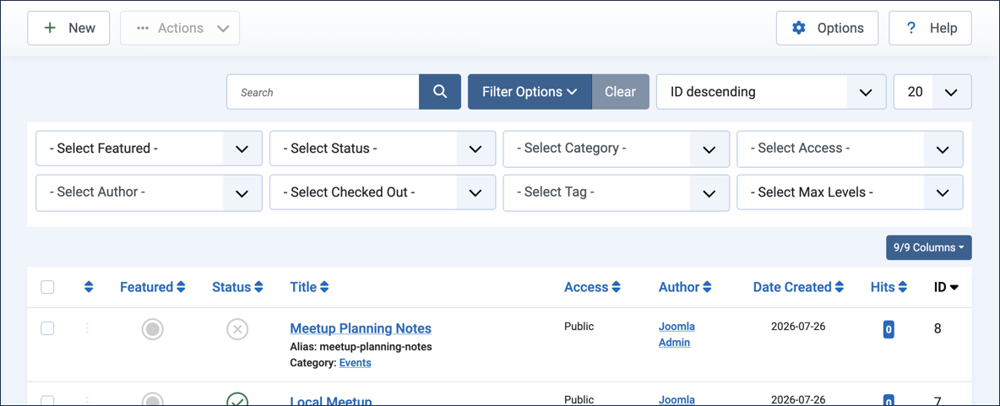
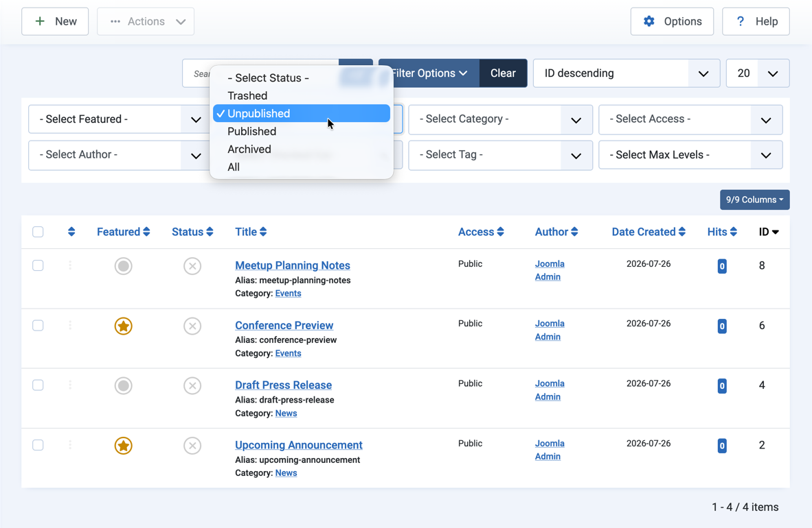
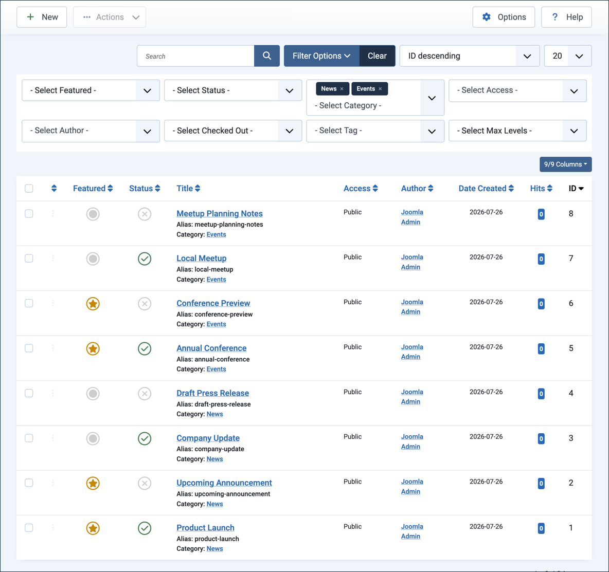
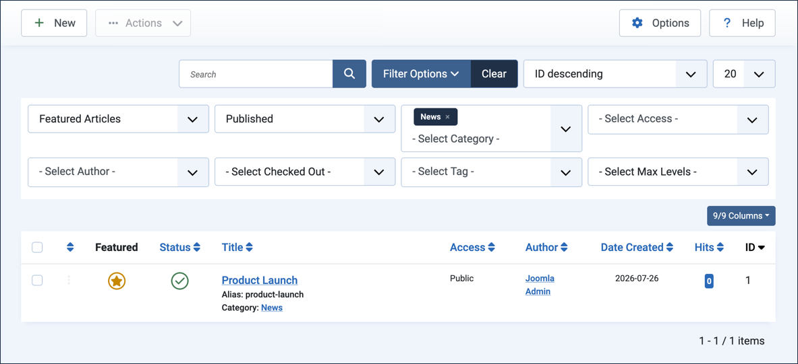
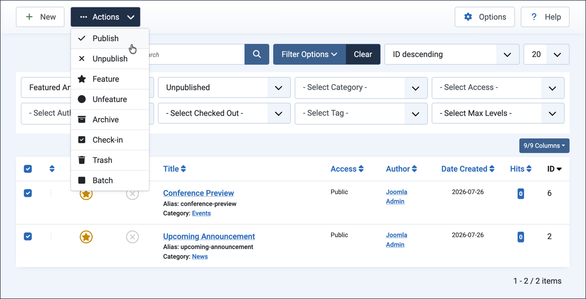

Log in to Joomla backend and navigate to the Home Dashboard.
In the Administrator Menu, click Content > Categories.
Click New. Result: A new-category form appears.
Title:News
Click Save & New.
Title:Events
Save & Close
Create Articles
This part of the setup moves quickly — each article just needs a title and three quick field selections.
In the Administrator Menu, click Content > Articles.
Click New. Result: A new-article form appears.
Title:Product Launch
Status:Published
Category:News
Featured:Yes
Click Save & New.
Title:Upcoming Announcement
Status:Unpublished
Category:News
Featured:Yes
Click Save & New.
Title:Company Update
Status:Published
Category:News
Featured:No
Click Save & New.
Title:Draft Press Release
Status:Unpublished
Category:News
Featured:No
Click Save & New.
Title:Annual Conference
Status:Published
Category:Events
Featured:Yes
Click Save & New.
Title:Conference Preview
Status:Unpublished
Category:Events
Featured:Yes
Click Save & New.
Title:Local Meetup
Status:Published
Category:Events
Featured:No
Click Save & New.
Title:Meetup Planning Notes
Status:Unpublished
Category:Events
Featured:No
Save & Close.
Steps
Filtering on Article Status
We're going to start by filtering only articles that have a specific status, in our case Unpublished.
In the Administrator Menu, click Content > Articles. Result: The list of articles appears.
Click Filter Options. Result: The filter options appear.

The filter options panel, with all filter dropdowns visible and unselected
In the - Select Status - dropdown at the top of the article list, select Unpublished. Result: The list narrows to the four unpublished articles — Upcoming Announcement, Draft Press Release, Conference Preview, and Meetup Planning Notes.

Selecting Unpublished from the Select Status dropdown narrows the list to four articles
Change the - Select Status - dropdown to Published. Result: The list now shows the four published articles instead.
Reset the filter by selecting - Select Status - from the dropdown. Result: The list shows all articles again.
Filtering on Category
In the - Select Category - dropdown at the top of the article list, select News. Result: The list narrows to the four News articles — a mix of featured, unfeatured, published, and unpublished — and News is shown in the dropdown.
Add a second category to the filter. Select Events from the dropdown. Result: Both News and Events are shown in the dropdown, and the list now shows all articles.

Adding both News and Events to the category filter shows all eight articles
Remove Events from the filter by clicking the small x next to the highlighted category title. Result: The list refreshes to show only the four News articles.
Click Clear next to the Filter Options button. Result: The list refreshes to show all articles, and the filter dropdowns disappear.
Filtering on Status, Category, and Featured
Filters combine — each additional filter narrows the list further rather than broadening it. Here we'll filter on featured, status, and category together to find one specific article.
Click Filter Options to reveal the filter choices, if not already open. Select the following filter options:
- Select Featured -:Featured Articles
- Select Status -:Published
- Select Category -:News
Result: The list narrows to a single article, Product Launch — the only one that is featured, published, and in the News category.

Combining the Featured, Status, and Category filters narrows the list to a single article, Product Launch
Click Clear next to the Filter Options button. Result: The list refreshes to show all articles.
Bulk Actions on Filtered Articles
Filtering doesn't just help you find articles — it's also a fast way to select a specific group of articles so you can act on all of them at once.
Click Filter Options to reveal the filter choices, if not already open. Select the following filter options:
- Select Featured -:Featured Articles
- Select Status -:Unpublished
Result: The list narrows to two articles, Upcoming Announcement and Conference Preview.
Tick the checkbox in the list column header to select all listed articles. Result: Both articles are selected, and the Actions button is enabled.
Pull down the Actions dropdown and select Publish. Result: Both articles are now published.

Selecting Publish from the Actions dropdown publishes both selected articles at once
Click Clear next to the Filter Options button. Result: The list refreshes to show all articles, now including the two you just published.
Concepts
A filter is used to show only content that matches the given criteria. Multiple criteria can be combined; each one narrows the results further rather than broadening them.
Filtering isn't only useful for finding content — it's also a way to select a specific group of articles so you can perform an action on all of them at once, such as publishing or archiving several articles simultaneously.
Similar filter options appear throughout Joomla, including in the Categories, Menus, and other content list views.